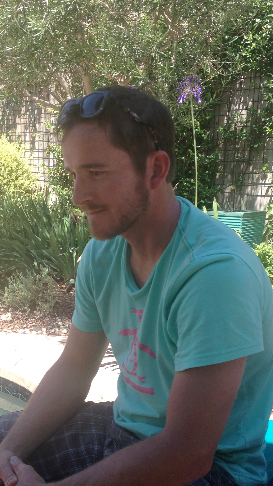
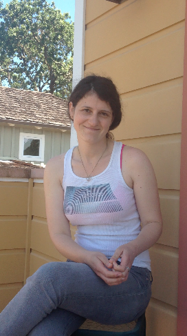
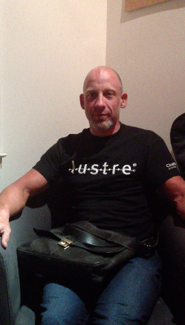
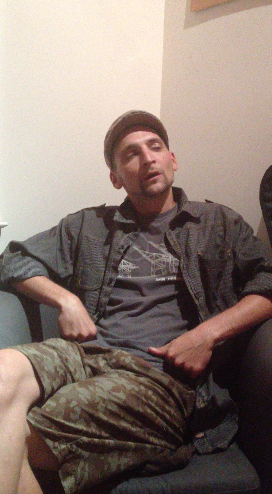
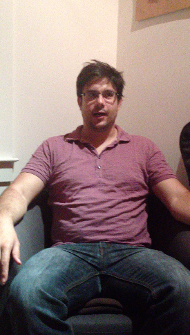

Why ask citizens about pride?
“I like to see a man proud of the place in which he lives. I like to see a man live so that his place will be proud of him. ” ― Abraham Lincoln
There are few reasons that stimulate my desire to start this project:
Mountain View, CA Adriana
Adriana

Drew
San Francisco, CA

Krista
San Francisco, CA

Rob
San José, CA
Portland, OR
Nick
New York, NY Alex
Alex
Mountain View, CA Tim
Tim
Jeremy
San Francisco, CA
San Francisco Anthony
Anthony

Garret
Northern California

Christian
Oakland, Berkeley, CA
Oakland, CA Nazzim
Nazzim
Grass Valley, CA Dana
Dana
Oakland, CA Chase
Chase
 Clara's Linkedin Profile
Clara's Linkedin Profile
 Clara's Resume
Clara's Resume